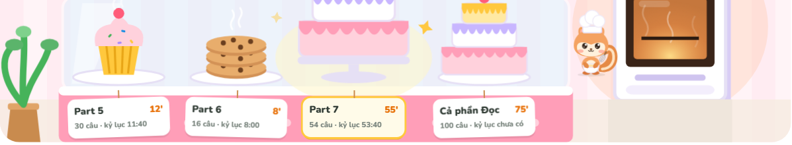

Hàng nút dưới Tiệm bánh · 3 hướng
Hiện tại nút dồn sang trái, “Đồng hồ Pomodoro” trôi sát lề phải nên bị lệch. Cả 3 hướng đều trải đều theo bề ngang cảnh, đổi “phút” thành “p”, và gom 2 lối phụ thành một dòng chữ nhỏ.
A · Quầy bánh trải ngang

Bánh kem · Part 7
54 câu · kỷ lục 53:40
−
55
p
+
🔥 Bật lò
Ghi kết quả, không bấm giờ
·
Đồng hồ Pomodoro ›
Mẻ bánh gần đây
Tuần này 1 mẻ · Phần Nghe chạy theo audio nên chỉ ghi kết quả
B · Một cụm nút ở giữa
−
55
p
+
🔥 Bật lò · Part 7
Ghi kết quả, không bấm giờ
·
Đồng hồ Pomodoro ›
Mẻ bánh gần đây
Tuần này 1 mẻ · Phần Nghe chạy theo audio nên chỉ ghi kết quả
C · Bảng điều khiển lò
Part 7 · bánh kem
54 câu · kỷ lục 53:40
−
55:00
+
🔥 Bật lò
Ghi kết quả
Pomodoro ›
Mẻ bánh gần đây
Tuần này 1 mẻ · Phần Nghe chạy theo audio nên chỉ ghi kết quả